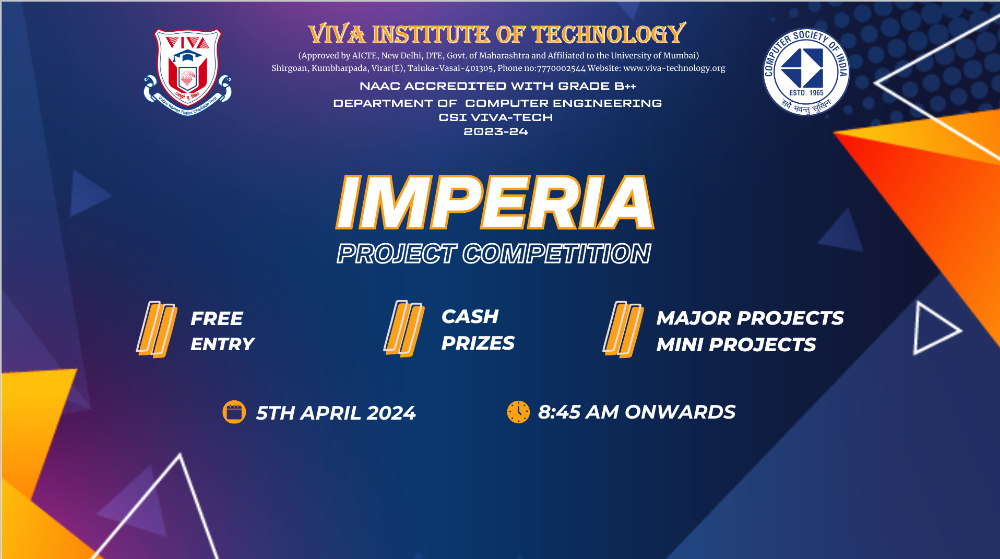
5thApril 2024
The CSI-VIVA successfully organized "Imperia 2024" at the Computer Engineering Department,
where students
presented their major and mini projects. The event, held for the fourth
consecutive year, provided an excellent opportunity for students to showcase their skills and
boost their
confidence. Participants submitted abstracts, and selected projects were presented and evaluated
by judges
who praised the innovative work and offered constructive feedback. The competition was a
valuable learning
experience, with significant participation from department staff and students, enhancing their
technical
knowledge and skills.

27th March 2024
CSI-VIVA successfully organized "TECHSPARK 5.0" at the Computer Engineering Department, VIVA
Institute of
Technology. This event allowed students to present their technical papers, enhancing their
skills and
confidence. Participants submitted abstracts, and selected papers were presented and evaluated
by a panel of
professors. Judges praised the quality of presentations and provided constructive feedback. The
event
promoted technical research and innovation, with significant participation from department staff
and
students, making it a knowledgeable and successful event.
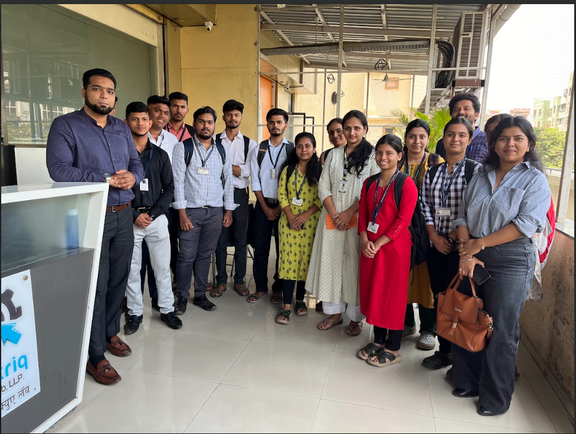
26th March 2024
CSI-VIVA organized an Industrial Visit for B.E Computer Engineering students to Testriq QA Lab,
LLP.
Students gained insights into the company's history, operations, and quality assurance
processes. The visit
provided a unique learning opportunity, exposing them to industry practices and methodologies.
Interactions
with professionals enhanced their practical knowledge and skills. Overall, it was an enriching
and
informative event.
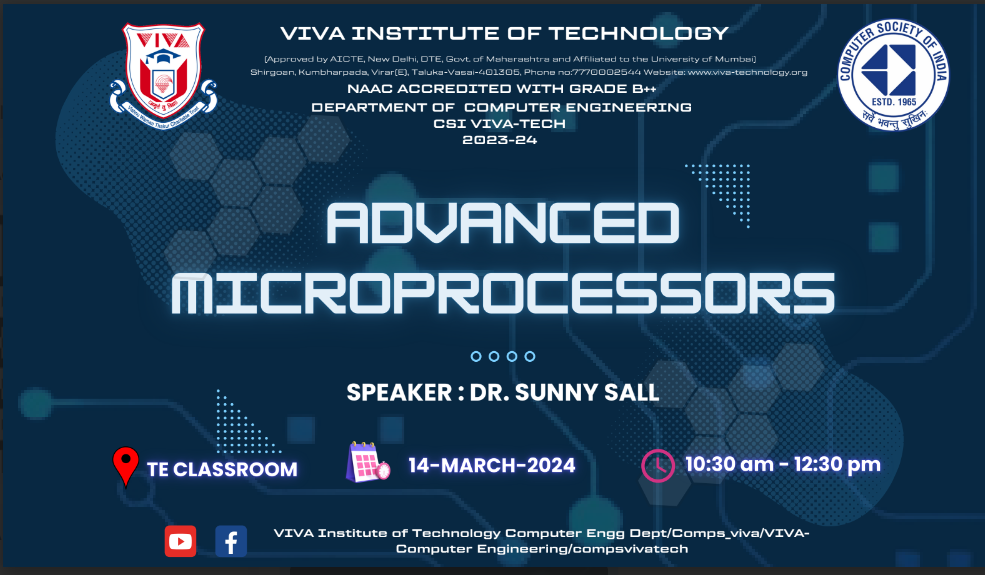
13th March 2024
The CSI-VIVA successfully organized the seminar on “Advanced Microprocessors'' at the Computer
Engineering
Department, VIVA Institute of Technology. The lecture was conducted by “Dr. Sunny Sall”. He is
an Assistant
Professor at St. John College of Engineering and Management, the individual likely holds an
academic
position focused on teaching, research, and potentially serving within the institution. He has
conducted
several research papers to discover new things in their field and share their findings with
others. He will
share his expertise in the field of microprocessors.
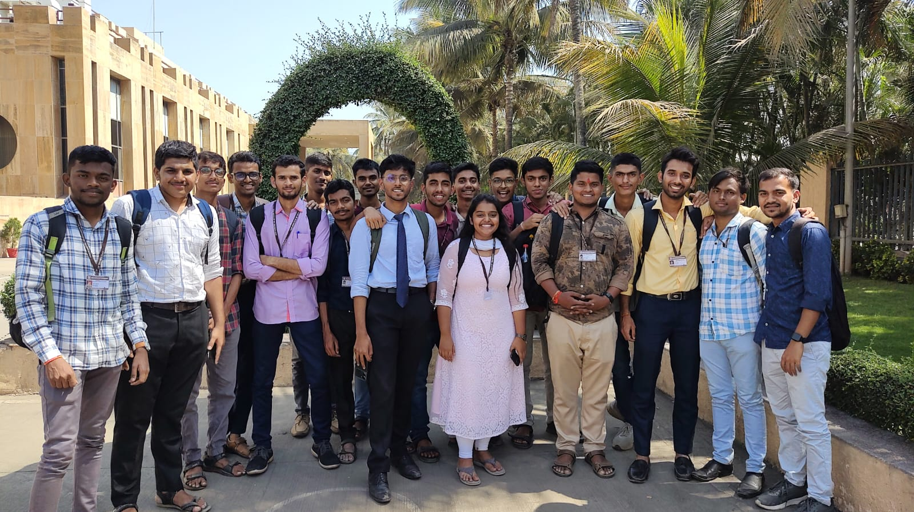
12th March 2024
he CSI-VIVA organized an Industrial Visit for S.E Computer Engineering students to Amul India
Pvt. Ltd.
Students eagerly anticipated the visit, which offered insights into Amul's history, operations,
and
production processes. They toured the factory, observing the automated production of dairy
products from
milk collection to packaging. Students interacted with employees, learning about Amul's
cooperative
business model and marketing strategies.The visit was an enriching, informative event, expanding
students'
perspectives and providing
unique learning opportunities..
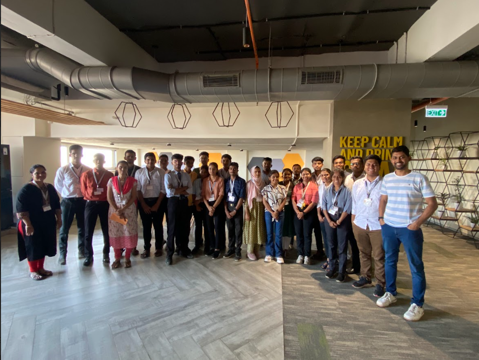
11th March 2024
The CSI-VIVA organized an Industrial Visit for S.E and T.E Computer Engineering students to Raw
Engineering
Pvt Ltd. Students eagerly anticipated the visit, gaining comprehensive insights into the
company's history,
operations, and production processes. The visit provided a unique learning opportunity,
enriching the
students' understanding of the industry. It was an informative and valuable experience overall.
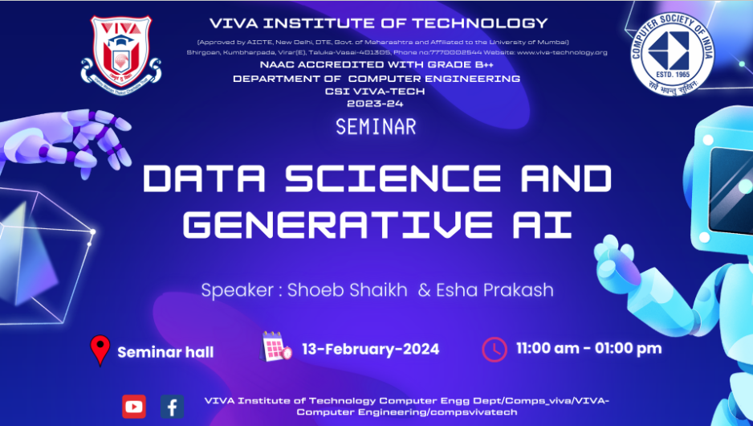
13th February 2024
The seminar on “Data Science and Generative AI” organized by the CSI-VIVA at the Computer
Engineering
Department, VIVA Institute of Technology was a resounding success. The lecture, conducted by Mr.
Shoeb
Shaikh and Miss Esha Prakash, provided valuable insights into various domains, including Prompt
Engineering,
Data Science, Machine Learning and various AI tools were introduced to the students.
Participants gained
firsthand knowledge about cutting-edge technologies, fostering their understanding of
engineering and data
analysis. The event was skillfully managed by the CSI, ensuring an enriching experience for all
students
involved.
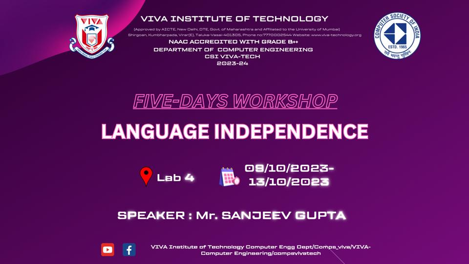
6th to 13th October 2023
SDAC (Sanjeev Gupta) organized an enlightening workshop on the topic of "Language
Independence." This
workshop spanned
multiple sessions and aimed to provide participants with a profound understanding of the
significance of
language
independence. Participants gained valuable insights into the practical applications of
language-independent
approaches and their
potential to drive innovation and efficiency.
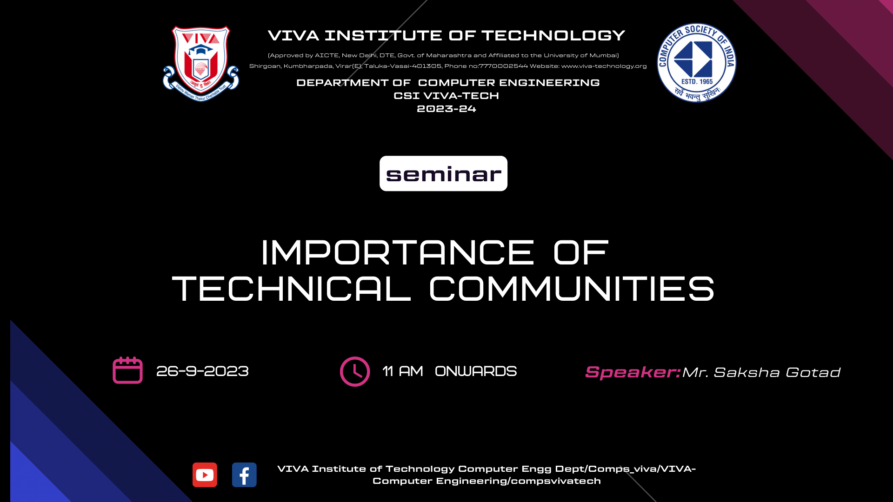
27th September 2023
CSI Member Saksha Gotad conducted a highly informative seminar on the importance of technical
communication. Over the
course of the event, participants gained valuable insights into the significance of effective
communication
in the tech
world. Saksha's engaging sessions highlighted how clear and concise communication can facilitate
better
collaboration,
streamline processes, and enhance overall productivity in the technology sector.
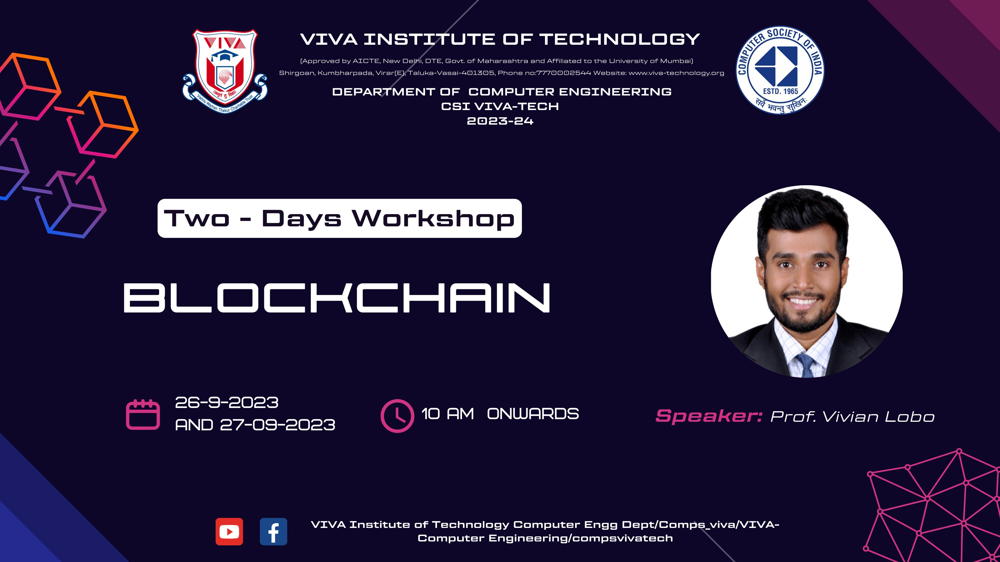
26th and 27th September 2023
CSI organized a two-day Blockchain workshop for final-year students, led by Mr. Vivian Lobo.
Students
delved into the decentralized nature of Blockchain, understanding its transformative impact on
data
storage, authentication, and transactions. The sessions emphasized trust, transparency, and
security in a
digitized
world, showcasing Blockchain's potential to reshape industries. Mr. Vivian Lobo's engaging
sessions left
students with a
profound understanding of Blockchain technology, contributing to their knowledge enhancement.
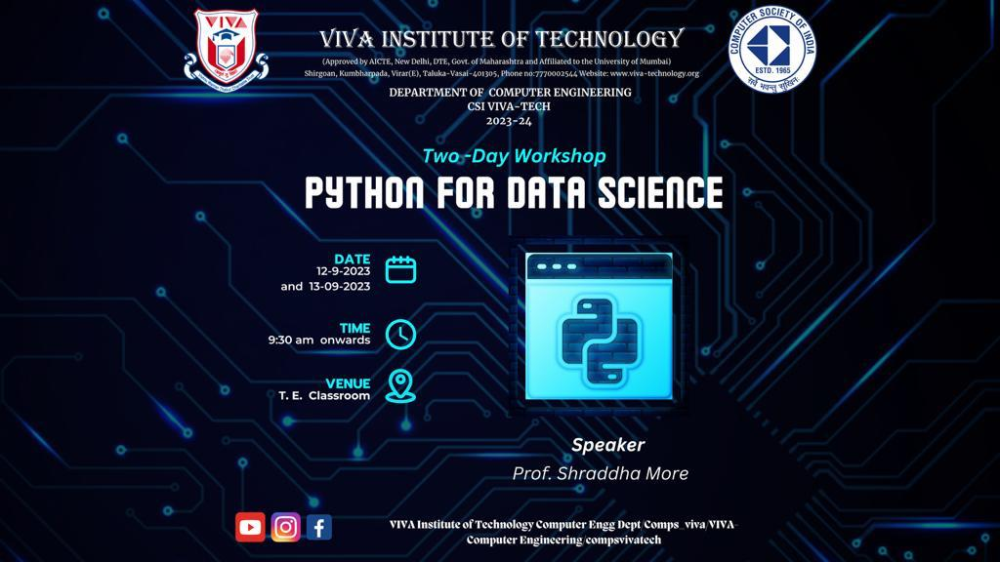
26th and 27th September 2023
The CSI committee hosted a two-day "Python for Data Science" workshop for third-year students.
Led by
expert Mrs.
Shraddha More, the event aimed to equip students with essential Python skills for data science
applications.
The
successful workshop highlighted the committee's dedication to enhancing students' technical
expertise for
the dynamic
world of data science and technology.
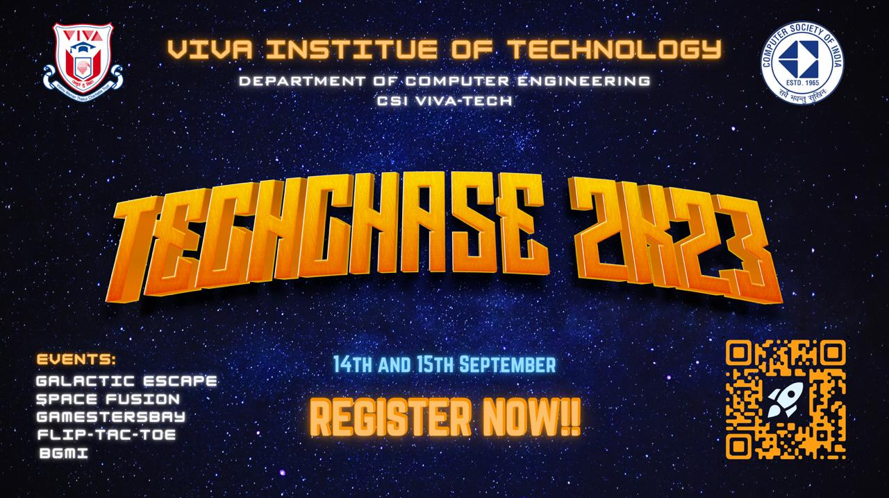
14th and 15th September 2023
Techchase 2023 transcended its hosting college, welcoming students from neighboring
institutions. This
inter-collegiate
event featured engaging technical games like Space Fusion, Flip-Tac-Toe, Gamstersbay, BGMI, and
Galactic
Escape. The
Computer Department's 'Galactic Escape' won the Best Event Award, showcasing exceptional
creativity. The event pulsated with energy, capturing the active involvement of students from
diverse
academic
backgrounds.
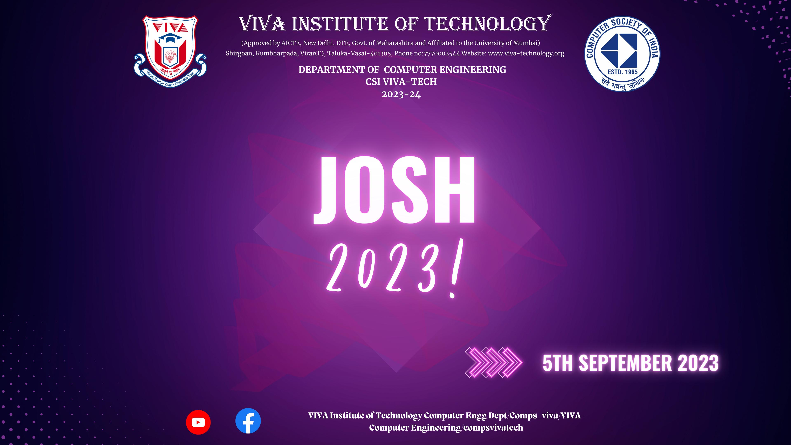
5th September 2023
The Engineers' and Teachers' Day celebration showcased diverse talents, including magic tricks,
photography, artworks,
and mathematical skills. Top package achievers from the 2023 batch inspired juniors, while games
like
Balloon & Cup,
Guess the Teacher, and Guess the Song added excitement. The event was a resounding success with
high student
participation across all activities.
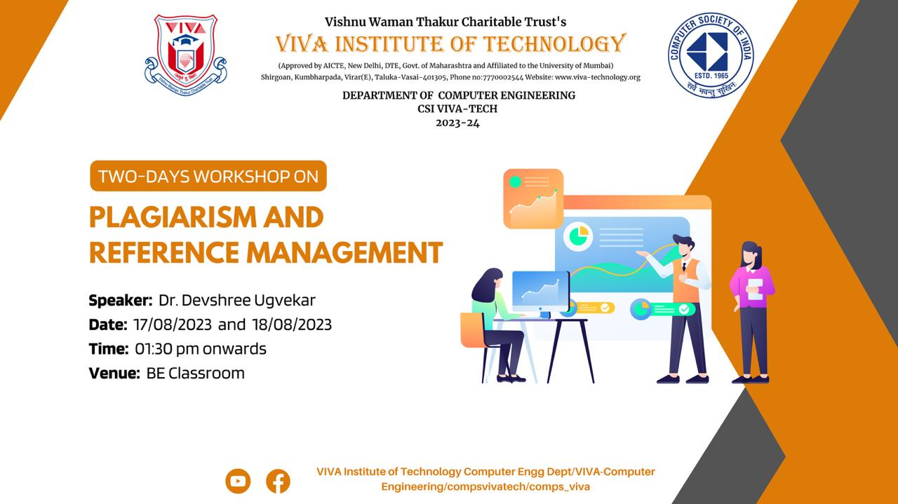
17th and 18th August 2023
The CSI committee organized a two-day workshop on Plagiarism and Reference Management,
facilitated by Mrs.
Priya Surve,
specifically tailored for final year students. The workshop aimed to educate students on the
importance of
avoiding
plagiarism and effectively managing references in academic work.
The successful execution of this workshop by the CSI committee catered to the educational needs
of the final
year
students.

9th August 2023
The workshop's objective was to underscore the significance of Algorithmic Foundations among
students. It
spanned two
days 9th and 10th August, offering live hands-on experience to SE department of computer
engineering
students. The
workshop delved into the significance of OOPs and algorithms for technical interviews and
company insights.
In summation, the workshop achieved its
goals
successfully.

7th August 2023
The seminar's purpose was to highlight the significance of bridging the gap between Industry
and Academia,
essential
domains in their own right. SE and TE students enthusiastically engaged in discussions and
interactive
sessions. The
event underscored practical skills, real-world applications, and industry trends. Overall,
the seminar
enriched students' comprehension of how academic knowledge harmonizes with industry
requirements, better
equipping them
for prosperous careers.

3rd August 2023
The event was arranged to provide students with the opportunity to relax and engage in various
activities.
Students from
the computer department actively participated in games such as Pictionary Relay, Code Hunt,
TechChain
TechJumble.
Participants enthusiastically competed and successfully completed all tasks to qualify for the
finals.
Ultimately, the
event was a source of enjoyment for everyone in the department, with a significant turnout from
SE, TE, and
BE.